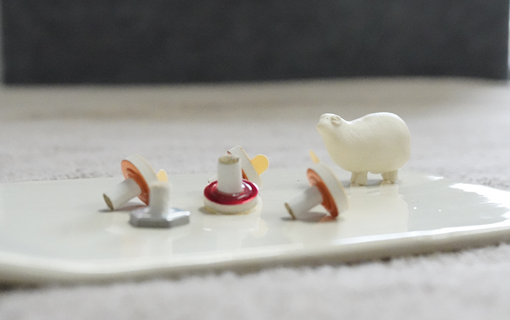

鍼灸
鍼灸
細い
3~5cmくらいの長さのものを主に使っています。直径が0.12mm、髪の毛と同じくらいの太さのステンレス製を使っています。細くて柔らかい針なので、血管や神経には刺さりませんが、あざになりやすい方はたまに血が滲んだり、内出血になったりすることがあります。あざになっても数日で消えます。
はりは全て使い捨てです。
いたくない
私が実はすごく怖がりなので、痛くなくさすコツを沢山練習しました。たまにちくっとする感じがあることがありますが、大体は何か気持ちいい響きの優しいはりをこころがけています。
浅め
大体皮膚の表面から2ミリくらい入れます。腰やお腹の厚いところには3センチほど入れることもあります。
置き針
大事なツボには効果が持続するように貼ります。絆創膏の真ん中のプラスティックに1ミリよりも短いはりがうめこまれています。シールが剥がれるまで1週間ほど留めておきます。とても短いので針の感覚はありません。
ささないはり
ちびっこと、大人でも刺激に弱い方にはこちらを使います。ツボをさすったり撫でたりするだけで気持ちいいです。
鍼灸
よもぎ、もぐさ、お灸
和菓子で馴染みの深いよもぎの葉から作られたもぐさで体を温める治療法です。よもぎを乾燥させて外側の毛を取り出したものがもぐさです。三方堂は特にお灸を沢山使っています。お灸のあたたかさといい匂いの煙でファンが多いです。鍼と並んでお灸も灸師という国家資格があります。
ちねつきゅう(知熱灸)
ピラミッド型に作ったもぐさを置いて、熱さを感じたらとります。お腹、背中、肩など突っ張っていて苦しいようなところにやることが多いです。
きゅうとうしん(灸頭鍼)
腰痛、生理痛など体の奥の冷えやコリ。腰、お腹、ふくらはぎや肩によく使います。温泉に入っているようでじんわり
てんきゅう(点灸)
灸師のプロ技です。ツボにごま粒大のもぐさを載せて点火します。一瞬つうんとした感じで熱が染み通ります。
台座灸
台がシールになっている手軽なお灸です。

治療にかかる時間はだいたい30分ほどで全身施術しています。
お薬や運動と同じように、今の体に必要な刺激をちょうどいい量で施術するのが鍼灸師の個性と腕の見せ所だと思うのですが、針の本数、針の深さ(大体浅めですが)、お灸の種類を決める指針のひとつとして、脈診をします。両手の手首の脈の強さ、早さ、柔らかさを見て東洋医学的な「証」を決めます。
体が冷えている時は脈がゆっくり、緊張がある時は固め、体力が落ちているときは弱々しい脈という風に、体の状態が脈に出るのを読み取ってその都度方針を決め全身のツボを使って施術しています。
はじめに脈を見て、施術をしながら変化を見ていきます。
脈が安定してくれば体の調子も整ってきたという合図なので、施術が効いているかの目安にもなります。施術時間が長くガンガンやってもらったほうがよくやってもらったような気がして満足感がありますが、あとでだるくなったり逆に具合が悪くなったりすることもあります。逆に少なすぎる刺激では効き目がありません。前回の鍼灸の後経過はどうだったか確認しながら刺激量をアジャストしつつというスタイルです。
体調は毎日変わるもの。施術もその時の体調に合わせます。
お薬や運動と同じように、今の体に必要な刺激をちょうどいい量で施術するのが鍼灸師の個性と腕の見せ所だと思うのですが、針の本数、針の深さ(大体浅めですが)、お灸の種類を決める指針のひとつとして、脈診をします。両手の手首の脈の強さ、早さ、柔らかさを見て東洋医学的な「証」を決めます。
体が冷えている時は脈がゆっくり、緊張がある時は固め、体力が落ちているときは弱々しい脈という風に、体の状態が脈に出るのを読み取ってその都度方針を決め全身のツボを使って施術しています。
はじめに脈を見て、施術をしながら変化を見ていきます。
脈が安定してくれば体の調子も整ってきたという合図なので、施術が効いているかの目安にもなります。施術時間が長くガンガンやってもらったほうがよくやってもらったような気がして満足感がありますが、あとでだるくなったり逆に具合が悪くなったりすることもあります。逆に少なすぎる刺激では効き目がありません。前回の鍼灸の後経過はどうだったか確認しながら刺激量をアジャストしつつというスタイルです。
体調は毎日変わるもの。施術もその時の体調に合わせます。